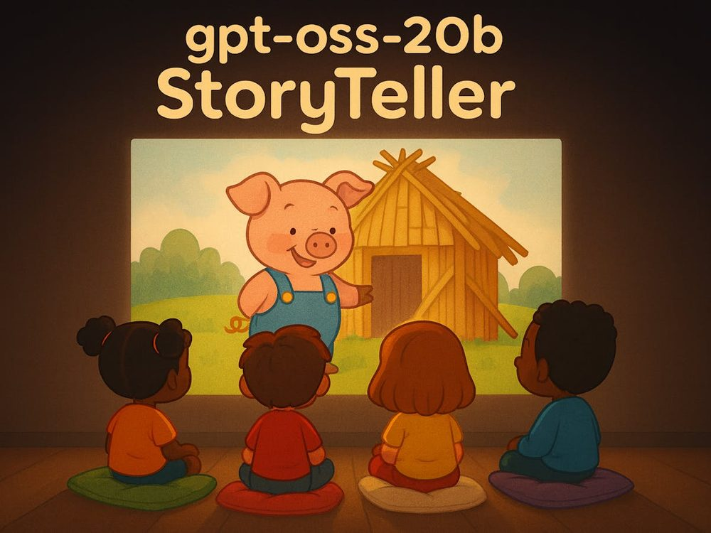
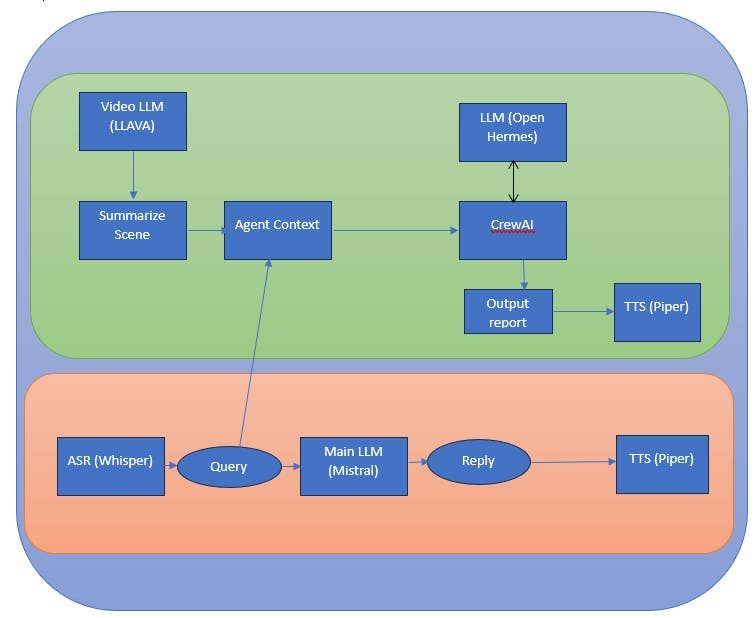
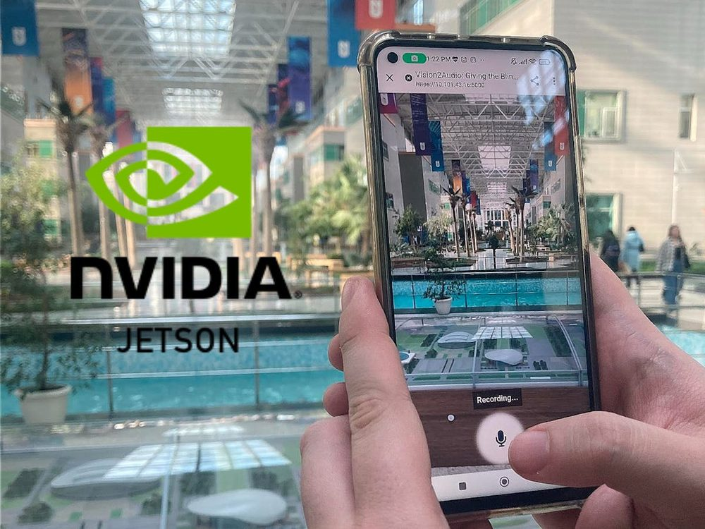
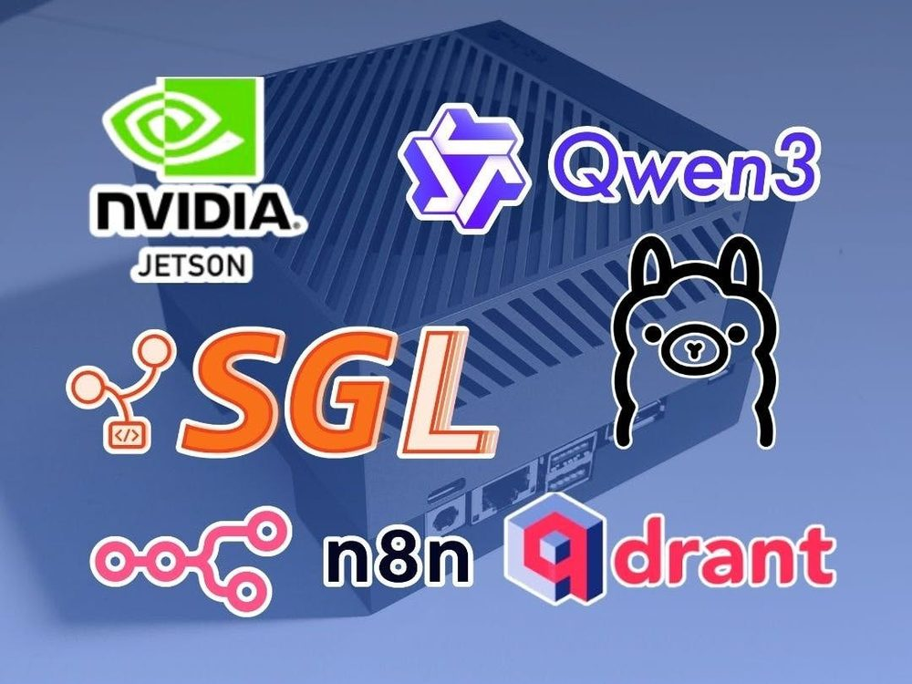
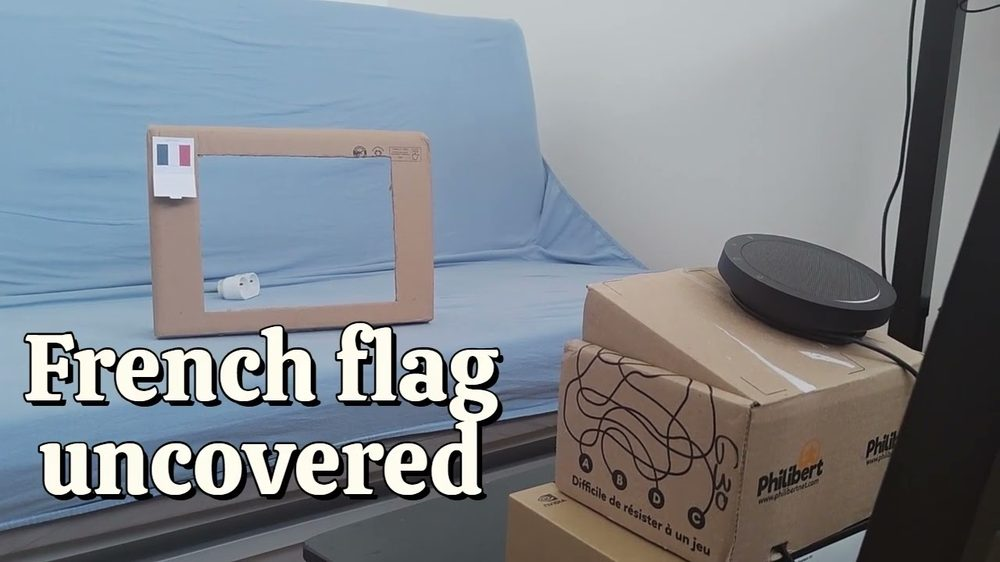
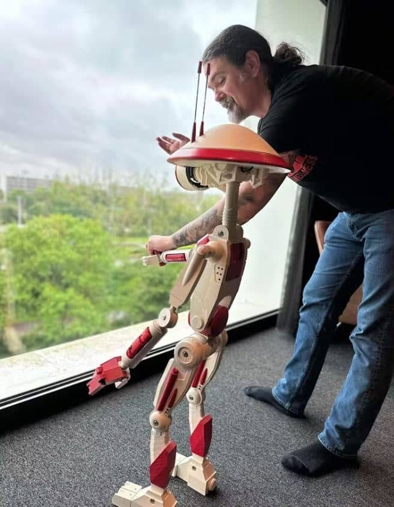
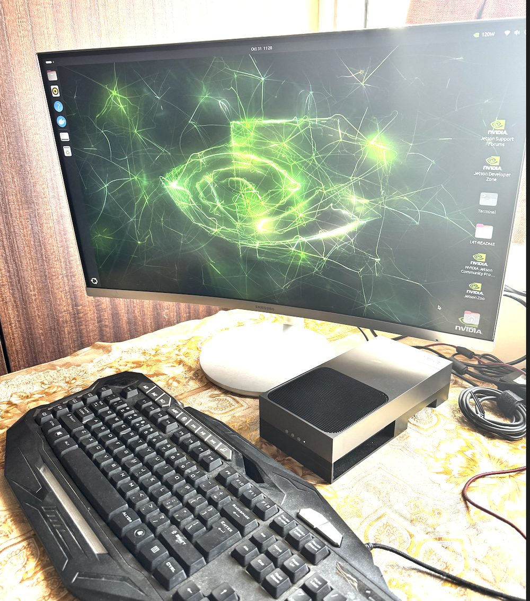
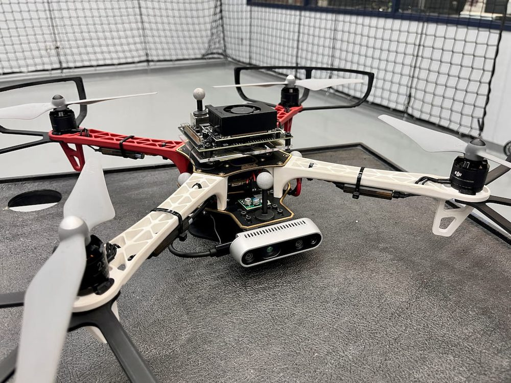
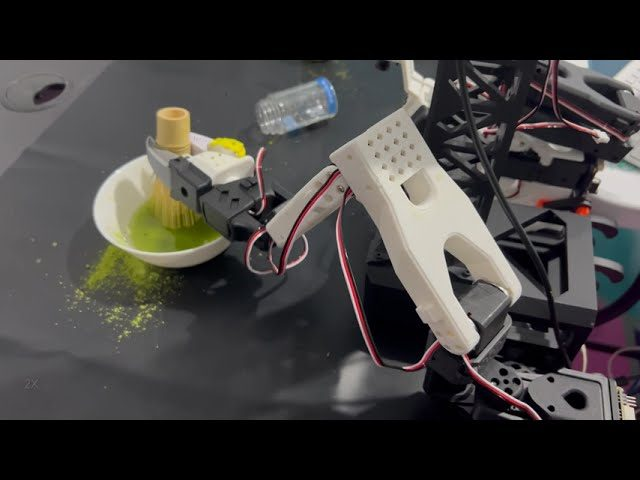

10 real robots running AI on NVIDIA Jetson — no cloud, verified sources only
One of them — a $249 Jetson Orin Nano — just out-detected a Mac Mini, 33 frames a second to 21, in a builder's own published benchmark. We traced ten Jetson-based projects to their original sources this week: real hardware, real builders, real numbers, ranked by what each one proves about running AI without a server in the loop.
Every project below is sourced to the builder's own writeup, repo, or video — no secondhand roundups, no invented specs, and every photo below is the builder's own, not stock art. We deliberately left out GLaDOS, the animatronic Portal robot by Dave Niewinski, even though it runs on a Jetson AGX Orin — we already spotlighted it and it hasn't had a material update since.
The top 5, as a countdown video
Watch on YouTube → — full sources and timestamps in the description. Built almost entirely from the builders' own real photos, screenshots, and demo footage rather than AI-generated video — narration and captions are synthesized, everything you see of the actual hardware is real.
The full ten, ranked
#10 — gpt-oss-20b Storyteller (Timothy Lovett): a projector-based storytelling device for kids — a MIDI-synth wand triggers a spoken prompt, GPT-OSS-20B writes the story locally via Ollama, SDXL illustrates it live, Piper narrates it. Built for an OpenAI hackathon on a Jetson AGX Orin. hackster.io — gpt-oss-20b Storyteller

#9 — Cooking Meals with a Local AI Assistant (Dimiter Kendri): a multi-agent voice assistant that gives cooking advice from camera context, no cloud API calls — Mistral and OpenHermes via Ollama, LLaVA:13B for vision, CrewAI for orchestration. 3rd place, NVIDIA AI Innovation Challenge, on a 64GB Jetson AGX Orin. hackster.io — Cooking Meals with a Local AI Assistant

#8 — AI-Powered Application for the Blind and Visually Impaired (Nurgaliyev Shakhizat): real-time image-to-speech description via LLaVA served through llama.cpp/MLC-LLM, with NVIDIA Riva handling ASR/TTS — on a 64GB Jetson AGX Orin. hackster.io — AI app for the blind and visually impaired

#7 — Local AI RAG Agent with n8n (also Nurgaliyev Shakhizat): the closest thing on this list to what privateSLM does on a phone — a fully local RAG chatbot over Telegram, reachable only via WireGuard VPN, no cloud tunneling. Qwen3-4B served via SGLang, Snowflake-Arctic-Embed2 for embeddings, Qdrant as the vector store. hackster.io — Local AI RAG Agent with n8n

#6 — The Curious Frame (Frédéric Collonval): a screen-free, cardboard "viewfinder" for kids — point it at an object, it identifies and explains it out loud, in English or (with a paper flag) French. Moondream2 for vision, Gemma 3n for description, Piper for speech, on an 8GB Jetson Orin Nano — RAM-constrained enough that the builder had to disable the GUI and add swap. hackster.io — The Curious Frame · demo video

#5 — Pit Droid (Goran Vuksic): a life-size, 3D-printed Star Wars Pit Droid replica whose head turns to track whoever's nearby, via SSD-Mobilenet object detection (dusty-nv/jetson-inference) on a Jetson Orin Nano. Profiled directly by NVIDIA. hackster.io — Pit Droid · NVIDIA blog profile

#4 — OpenClaw on Jetson AGX Thor (Ajeet Singh Raina): a private coding assistant on NVIDIA's newest board, with the most complete builder-published benchmark table on this list — SmolLM2 at ~40 tok/s, Llama 3.2 3B at 17.3 tok/s generation / 26.8 tok/s prompt processing, Qwen3 8B at 12–15 tok/s, cold start ~1.3s, warm start under 0.2s, board power draw under 130W. ajeetraina.com — OpenClaw on Jetson Thor

#3 — YOLOv8 vs. a Mac Mini (jiajin lu): the sharpest data point in this whole roundup. The builder rewrote YOLOv8n inference in raw C++/TensorRT on a 4GB Jetson Orin Nano to beat Python's overhead, then benchmarked it against the same model on a Mac Mini:
A palm-sized, 4GB board — the cheapest in this whole list — beat a desktop computer at real-time object detection, purely by moving inference from Python to C++/TensorRT. hackster.io — Pushing Limits: YOLOv8 vs Mac Mini
#2 — GPS-Denied Drone with Visual SLAM (Andrew Bernas): a quadcopter that holds square, circle, and figure-8 flight patterns with zero GPS, fusing a stereo camera and IMU through NVIDIA Isaac ROS Visual SLAM and an EKF, on a Jetson Orin Nano drawing a builder-stated max of 36W. The repo has 107 GitHub stars and active commits. hackster.io — GPS-Denied Drone · github.com/bandofpv/VSLAM-UAV · demo video

#1 — Matcha Bot (SIGRobotics, UIUC — Filip Kujawa, Sanjit Kumar, Stephen Zhu, Hasan Al Saeedi): a bimanual robot that pours matcha powder, pours water, and whisks it, running NVIDIA's GR00T N1.5 vision-language-action foundation model on a Jetson Thor, controlling two modified SO-101 arms. 1st place, SIGRobotics' Embodied AI Hackathon. The most technically advanced project on this list — a full VLA model driving physical manipulation, not just perception. hackster.io — Matcha Bot · demo video

What we skipped
We checked and rejected several leads that didn't clear our sourcing bar: a "Sprout" autonomous microfarm (Devpost page not independently fetchable, so model names and claims couldn't be verified), and a handful of listicle-style "Jetson AI projects" articles with no named, credited builder behind them. If you know of a Jetson project we're missing — ideally with the builder's own writeup or repo — tell us on the forum.
What ties all ten together: none of them phoned home to run the model. That's the same bet privateSLM makes on the device already in your pocket.
Discuss this on the forum → — which of the ten would you rank differently?